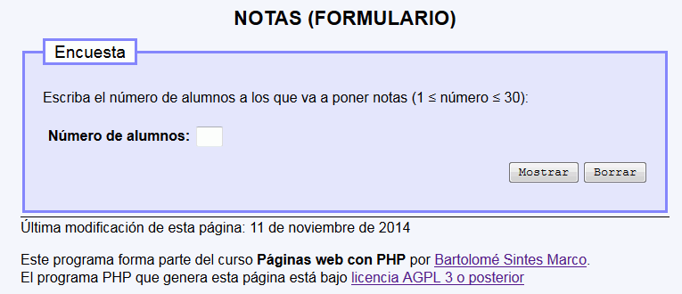
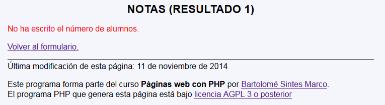
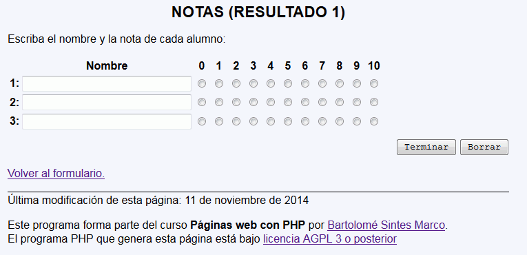
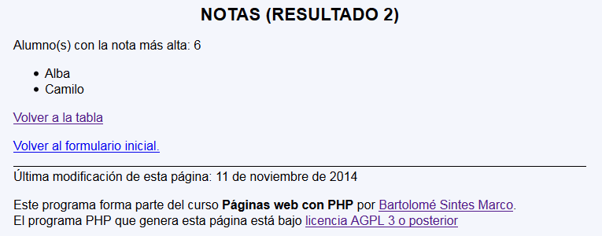

Notas - Ejemplo de programa
Nota: El día del examen los alumnos no tienen acceso a este ejemplo, solamente tienen acceso a las capturas del apartado anterior.
Un ejemplo de programa puede probarse en la ventana siguiente:
En este ejercicio se debe crear un programa que permita introducir notas de alumnos y diga quién o quiénes han sacado la nota más alta:



Nota: No es necesario comprobar las matrices recibida (salvo si sobra tiempo ;-)

<h1>Notas (Resultado 1)</h1>
<p>Escriba el nombre y la nota de cada alumno:</p>
<form action="notas_3.php" method="get">
<table>
<tbody>
<tr>
<th></th>
<th>Nombre</th>
<th>0</th>
<th>1</th>
<th>2</th>
<th>3</th>
<th>4</th>
<th>5</th>
<th>6</th>
<th>7</th>
<th>8</th>
<th>9</th>
<th>10</th>
</tr>
<tr>
<th>1:</th>
<th><input type="text" name="nombres[1]" size="30" /></th>
<td><input type="radio" name="notas[1]" value="0" /></td>
<td><input type="radio" name="notas[1]" value="1" /></td>
<td><input type="radio" name="notas[1]" value="2" /></td>
<td><input type="radio" name="notas[1]" value="3" /></td>
<td><input type="radio" name="notas[1]" value="4" /></td>
<td><input type="radio" name="notas[1]" value="5" /></td>
<td><input type="radio" name="notas[1]" value="6" /></td>
<td><input type="radio" name="notas[1]" value="7" /></td>
<td><input type="radio" name="notas[1]" value="8" /></td>
<td><input type="radio" name="notas[1]" value="9" /></td>
<td><input type="radio" name="notas[1]" value="10" /></td>
</tr>
<tr>
<th>2:</th>
<th><input type="text" name="nombres[2]" size="30" /></th>
<td><input type="radio" name="notas[2]" value="0" /></td>
<td><input type="radio" name="notas[2]" value="1" /></td>
<td><input type="radio" name="notas[2]" value="2" /></td>
<td><input type="radio" name="notas[2]" value="3" /></td>
<td><input type="radio" name="notas[2]" value="4" /></td>
<td><input type="radio" name="notas[2]" value="5" /></td>
<td><input type="radio" name="notas[2]" value="6" /></td>
<td><input type="radio" name="notas[2]" value="7" /></td>
<td><input type="radio" name="notas[2]" value="8" /></td>
<td><input type="radio" name="notas[2]" value="9" /></td>
<td><input type="radio" name="notas[2]" value="10" /></td>
</tr>
<tr>
<th>3:</th>
<th><input type="text" name="nombres[3]" size="30" /></th>
<td><input type="radio" name="notas[3]" value="0" /></td>
<td><input type="radio" name="notas[3]" value="1" /></td>
<td><input type="radio" name="notas[3]" value="2" /></td>
<td><input type="radio" name="notas[3]" value="3" /></td>
<td><input type="radio" name="notas[3]" value="4" /></td>
<td><input type="radio" name="notas[3]" value="5" /></td>
<td><input type="radio" name="notas[3]" value="6" /></td>
<td><input type="radio" name="notas[3]" value="7" /></td>
<td><input type="radio" name="notas[3]" value="8" /></td>
<td><input type="radio" name="notas[3]" value="9" /></td>
<td><input type="radio" name="notas[3]" value="10" /></td>
</tr>
</tbody>
</table>
<p class="der"><input type="submit" value="Terminar" />
<input type="reset" value="Borrar" />
<input type="hidden" name="alumnos" value="3" /></p>
</form>
Nota: El día del examen los alumnos no tienen acceso a este ejemplo, solamente tienen acceso a las capturas del apartado anterior.
Un ejemplo de programa puede probarse en la ventana siguiente: